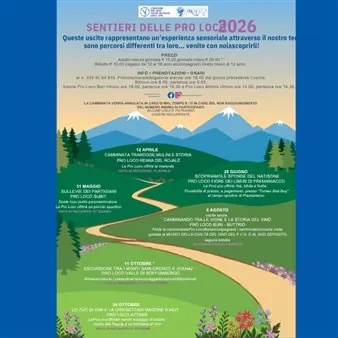

da dom 12 apr a sab 24 ott
Sentieri delle Pro Loco 2026
Sentieri delle Pro Loco 2026 Data e Luogo: 24 OTTOBRE Attimis,11 OTTOBRE Valle di Soffumbergo, 6 AGOSTOButtrio, 28 GIUGNO Premariacco, 31 MAGGIO Subit, 12 APRILE Reana del Rojale. Contatti: 333 45 64 933. Prenotazione obbligatoria entro le ore 18.00 del giorno precedente…
 Indicazioni
Indicazioni
- Costi e prenotazioni
- Costo non indicato · Prenotazione non indicata
- Programma
- Programma da verificare. Apri la fonte ufficiale per orari e possibili aggiornamenti.
- In caso di maltempo
- Nessuna indicazione specifica pubblicata.
- Note
- Acquisito automaticamente dalla fonte.
L’EVENTO
Descrizione completa
“Sentieri delle Pro Loco 2026” è un ciclo di escursioni organizzate dal Consorzio Pro Loco Torre Natisone che accompagna i partecipanti alla scoperta del territorio attraverso percorsi naturalistici, storici e culturali.
Ogni uscita propone un’esperienza diversa: dalle rogge e mulini storici, ai sentieri partigiani, fino alle sponde del Natisone e ai paesaggi collinari tra vigne e borghi. Le escursioni sono accompagnate da guide esperte e arricchite da momenti conviviali con degustazioni e prodotti tipici locali.
L’iniziativa è pensata per un pubblico ampio, con percorsi adatti sia alle famiglie sia agli escursionisti, offrendo un modo autentico per conoscere il territorio e le sue tradizioni.
12 APRILE – CAMMINATA TRA ROGGE, MULINI E STORIA (Reana del Rojale)
Escursione guidata alla scoperta del paesaggio rurale di Reana del Rojale, tra rogge, mulini storici e luoghi di interesse religioso come la chiesa di Rizzolo e il Santuario di Ribis. Un percorso pianeggiante, adatto a tutti, che unisce natura e tradizione locale.
IL PROGRAMMA
Programma e orari
Appuntamenti raccolti dalle fonti elencate. Dove manca un orario, non è ancora disponibile in questa scheda.
Programma pubblicato
- Dal 2026-04-12 al 2026-10-24
INFORMAZIONI UTILI
Prima di partire
- Controllare la fonte prima di partire.
ORGANIZZAZIONE